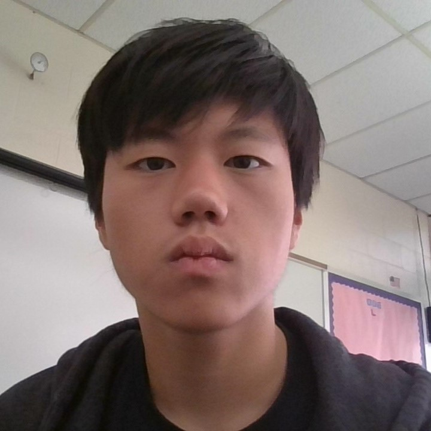

Computer Science • Machine Learning • Automation
I am a sophomore at East Brunswick High School with a strong interest in computer science and engineering. I enjoy automating tasks, building personal projects, and exploring fields such as machine learning and data science. Outside of school, I enjoy playing indie games, designing PCs, programming, and running.
Developed a Python bot that automatically generated valid responses for Bomb Party while simulating realistic typing behavior. The project focused on efficient word searching, optimization, and automation.
Built a convolutional neural network capable of recognizing CAPTCHA images. Through this project I learned about machine learning, data preprocessing, and model evaluation.
Created a trading model that tested strategies using historical market data. Can connect to Alpaca API to execute trades. The project strengthened my skills in data analysis and algorithmic decision making.